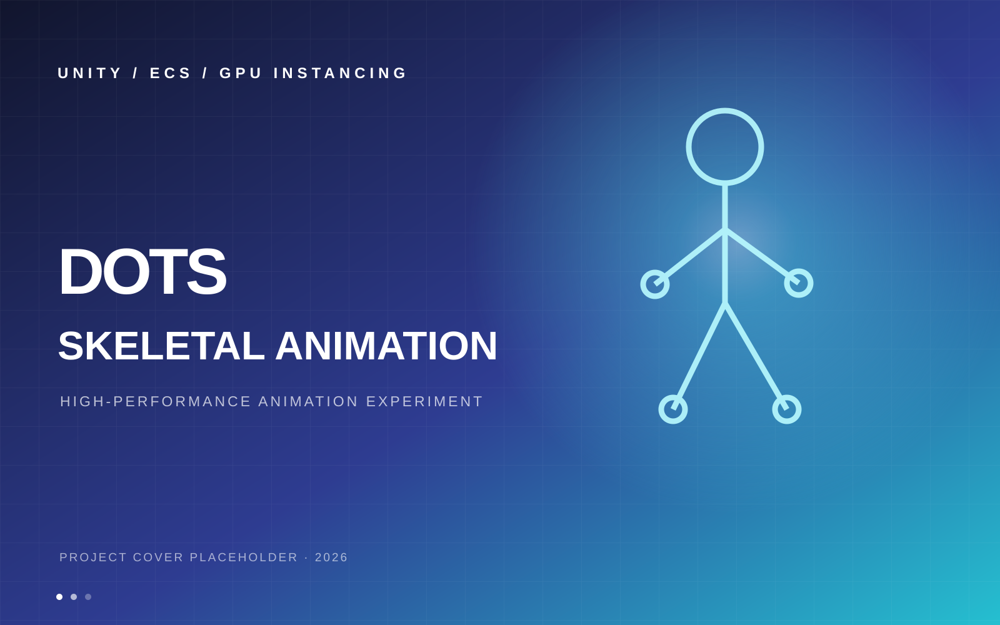
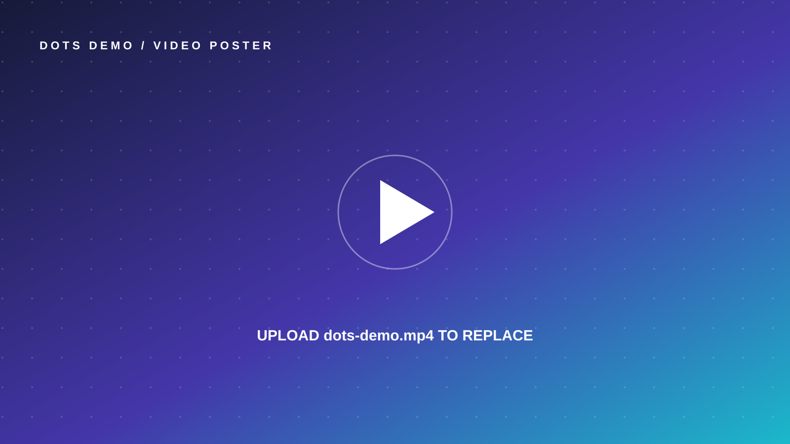

← 返回作品列表DOTS
DOTS
骨骼动画
测试 Demo
基于 Unity DOTS 架构实现高性能 GPU 骨骼动画测试，采用 2D 纹理烘焙动画数据，结合 GPU Instancing 批量渲染。
ROLE独立开发
TIME2026.01—03
ENGINEUnity

CASE STUDY / 01
让上万实体，保持同一种流畅。
项目背景
探索大量动画实体同时运行时的 CPU 逻辑更新、动画数据传输与渲染瓶颈，验证 DOTS 与 GPU Instancing 组合方案。
我的职责
独立完成动画烘焙工具开发、ECS 业务系统编写、动画 Shader 开发与材质属性传参优化，实现多线程动画逻辑更新与渲染性能优化。
技术方案
将骨骼动画数据烘焙为 2D 纹理，在 GPU 侧读取动画状态；使用 ECS 组织动画实体及状态更新，并通过 Instancing 降低大量实体的绘制开销。
结果与反思
具体帧率、实体数量、设备环境和性能对比数据将在测试完成后补充。正式版本建议加入 Profiler 截图与 Before / After 对比。
PROJECT MEDIA
过程与画面
占位图片可直接覆盖替换
DEMO VIDEO
运行演示
本地 MP4 · 静音播放 · 可全屏
